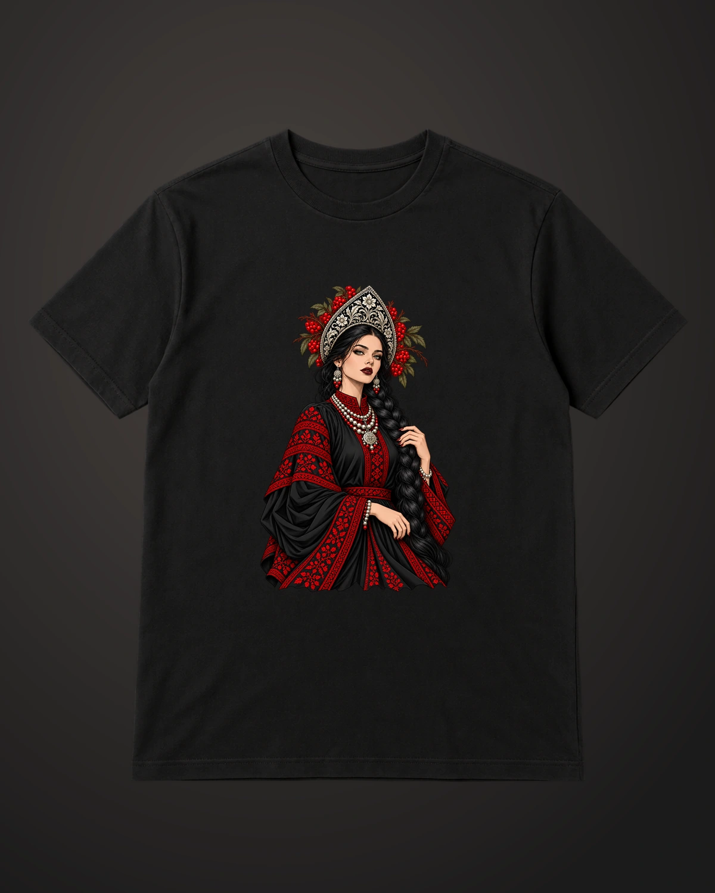
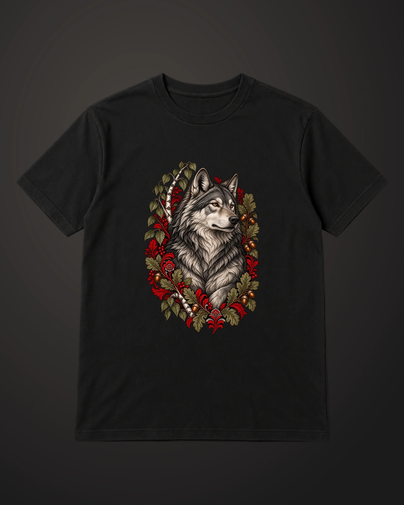
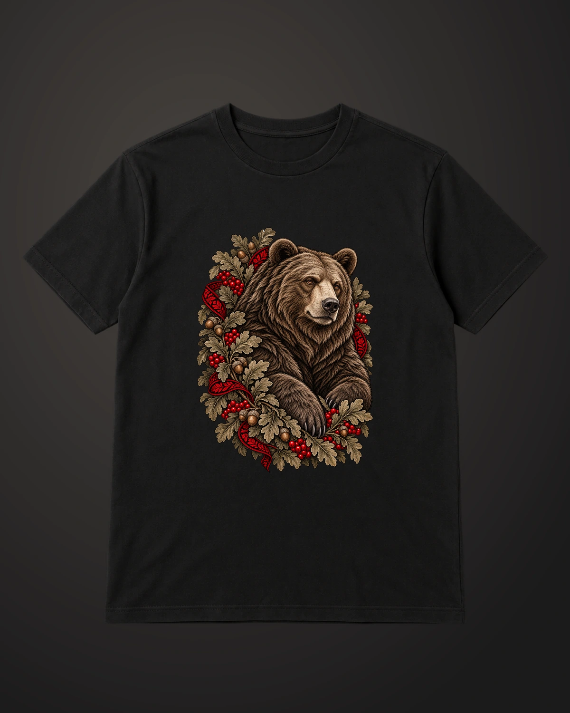
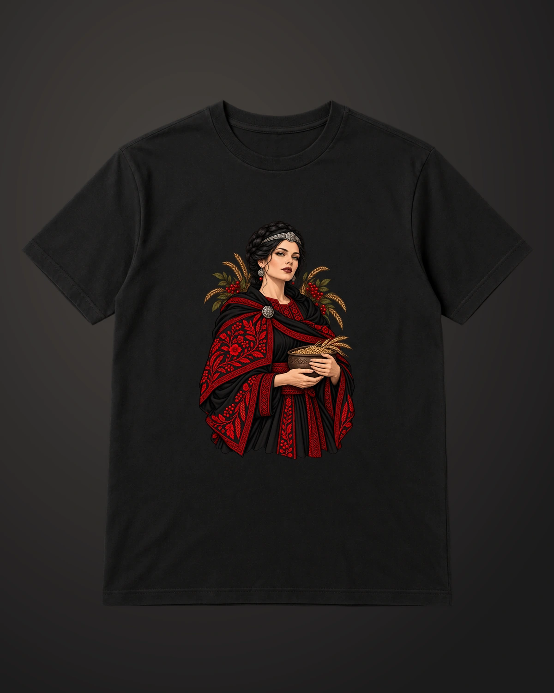
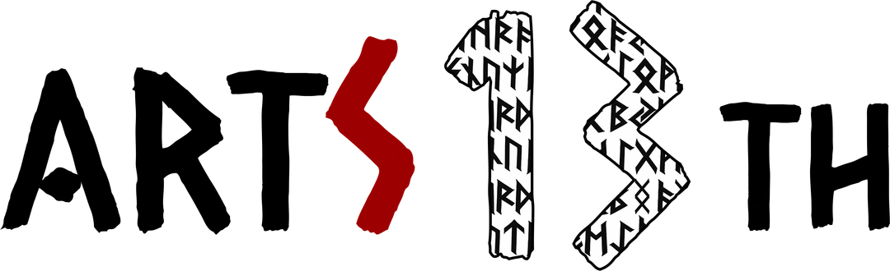
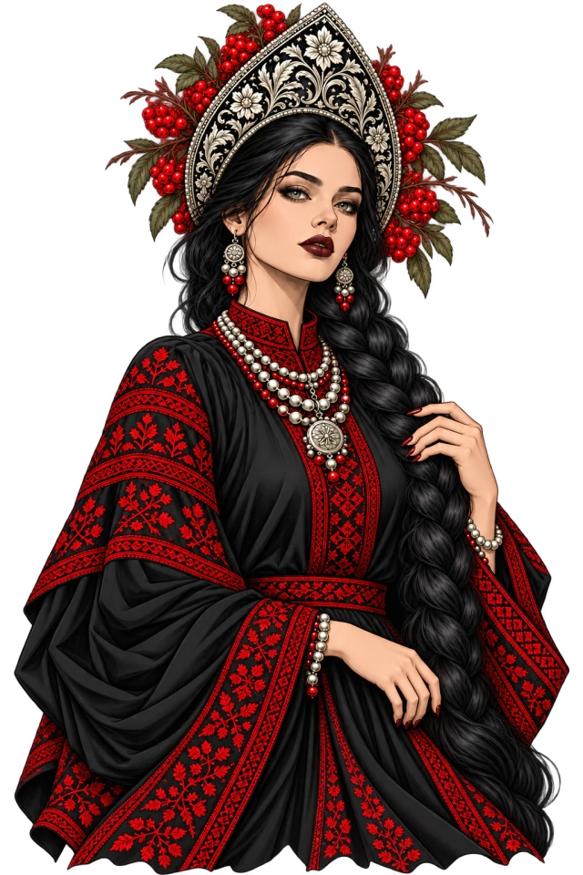
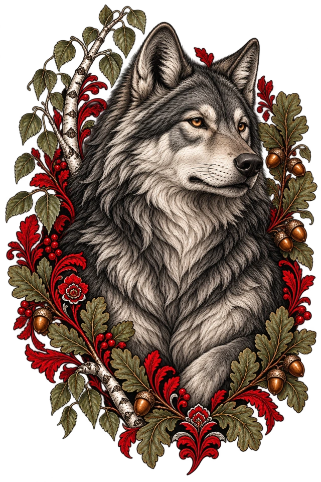

Футболка · 13thДизайн коллекции
Till Ragnarök
Белое плетение и ворон на чёрной основе.

Авторская одежда ArtS13Studio
Своя графика. Северные образы.
Вещи, в которых узнаёшь себя.
Славянская коллекция / 13th
Рябина, лесные звери и истории, которые остаются с нами.
Авторские принты на чёрных и белых футболках.

13th / Осенняя коллекция
13th / Осенняя коллекция
13th / Осенняя коллекция
13th / Осенняя коллекцияВыберите свой образ. Размер и расположение принта обсудим вместе.
Вся осенняя коллекция01 / Коллекция 13th
От лаконичного знака до сложной графики.
Шесть характеров одной коллекции.
Белое плетение и ворон на чёрной основе.

Северный орнамент и красный акцент.

Ладья, тонкие линии и холодный синий.

Графика о характере, который выковывают.

Дерево, корни и память о своём пути.

Ворон и сложное металлическое плетение.
Макеты коллекции. В галереях — принты и доступные ракурсы.
Вся одежда 13th
02 / За каждым принтом — история
Плетение, которое хочется рассмотреть. Знак, который становится своим.
Ворон, дерево, ветер и переплетённые линии — образы северной серии 13th. У каждой вещи свой рисунок и настроение, а вместе они складываются в узнаваемую историю.
03 / Авторский мерч
Дизайн и печать авторского мерча
Для себя, команды или проекта. Начинаем с вашей идеи и собираем графику, которая передаёт именно ваш характер.
Обсудить идею
13th × Волк
«Большой и пушистый» — характер человека в собственном принте.
Посмотреть проект
13th × Custom23
Четыре персональных рисунка, объединённых общей историей.
Посмотреть проектОбсуждаем, для кого вещь, её настроение и ваши референсы.
Собираем рисунок и показываем его расположение на одежде.
Уточняем основу, размеры, количество, стоимость и сроки.
После согласования готовим принт и переходим к нанесению.



04 / О студии · Рязань
Мы — ArtS13Studio, небольшая творческая мастерская из Рязани. Делаем одежду, придумываем принты и помогаем чужим идеям обрести форму.
В нашей графике живут северные леса, славянские образы, звери и переплетения старых орнаментов. Нам нравится собирать сложный рисунок из мелких деталей — так, чтобы он оставался понятным и на обычной повседневной футболке.
13th — наша собственная линия одежды. А ещё к нам можно прийти с личной историей, рисунком для команды или задумкой подарка. Вместе выберем основу, цвет, размер и расположение изображения, обсудим макет и стоимость.
Мастерскую тоже обустраиваем своими руками: понемногу, с вниманием к деталям и с душой. Во ВКонтакте показываем новые работы, делимся процессом и слушаем ваши идеи.
Заглянуть в жизнь мастерскойФутболки, худи и другие вещи с нашей графикой. Северные и славянские мотивы, чёрные и белые основы, детали со своим характером.
Выбрать свой образОдежда для себя, друзей, команды или проекта. Помогаем с дизайном и нанесением: от небольшой надписи до подробной композиции.
Как мы работаемКружки и бокалы с оформлением, наклейки, визитки, листовки, бирки и сертификаты. Подберём исполнение под вашу задачу и тираж.
Обсудить заказЕщё одна сторона нашей студии: тёмная атмосфера, северные образы и истории в музыке. Альбом #Dark Music уже можно слушать здесь.
Включить музыкуМожно начать с пары слов. Готовый макет не обязателен — расскажите, для кого и зачем хотите сделать вещь. Остальные детали разберём вместе.
Перед первым сообщением
Да. Пришлите рисунок или референсы и расскажите, на какой вещи хотите его видеть. Посмотрим, что потребуется для подготовки макета к печати.
Откройте понравившуюся модель и напишите нам её название. Уточним возможность изготовления, основу, размер и расположение принта. Изображения в каталоге показывают дизайн; наличие и параметры обсуждаем отдельно.
Расскажите о типе одежды, количестве вещей, рисунке и желаемом сроке. Если пока есть только идея, начнём с неё. Стоимость и сроки согласуем по конкретному проекту.
Есть своя идея?
Пришли название вещи, свой рисунок или пару слов о будущем мерче.

Музыкальное направление ArtS13Studio
Альбом #Dark Music: семь треков, свои истории и холодное северное звучание.